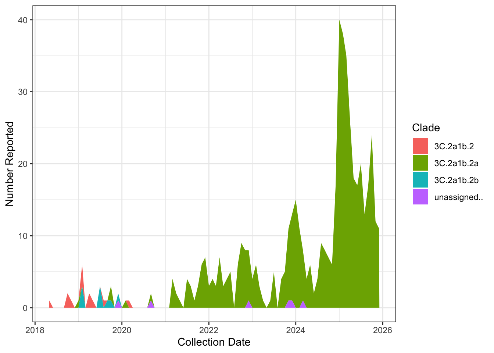
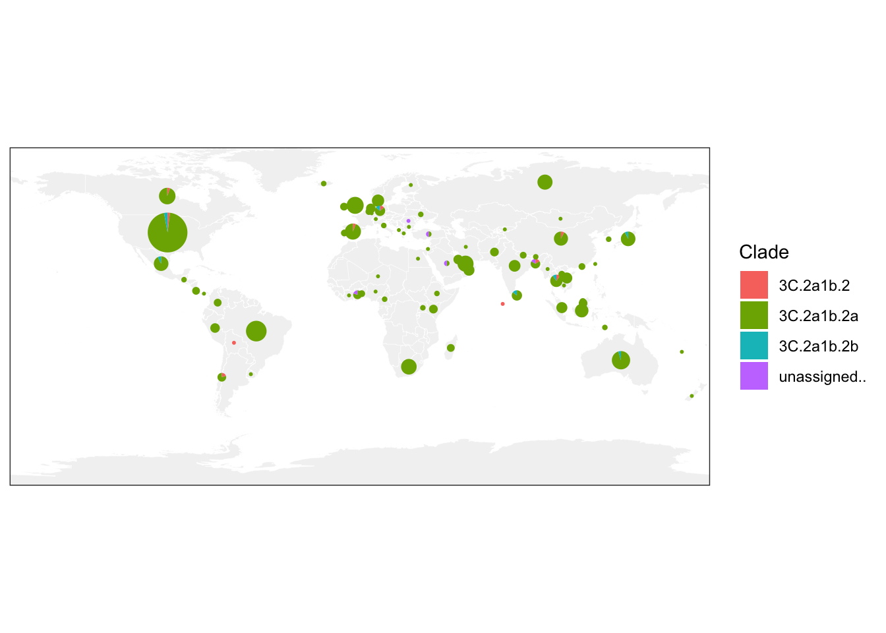
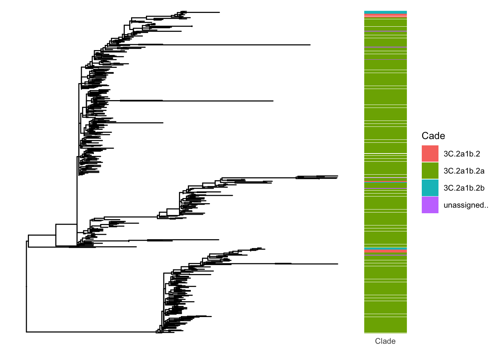

ational Influenza Genomic Surveillance Report
Country:
Influenza Season: (e.g., 2025 Southern Hemisphere)
Reporting Period: (Start date – End date)
Prepared by: National Influenza Center / Genomic Surveillance Unit
Date of Report:
1. Executive Summary
This report summarizes influenza virus genomic surveillance conducted during the [season] influenza season in [country]. Surveillance integrates routine virological testing with whole-genome sequencing to monitor circulating influenza strains, genetic diversity, antiviral resistance markers, and phylogenetic relationships.
Key findings: - Total specimens tested: [N] - Influenza-positive specimens: [N] - Viruses sequenced: [N] - Dominant clades/subclades: [e.g., A(H1N1)pdm09 clade 6B.1A.5a] - Antiviral resistance marker H275Y detected in [N] viruses
This report includes 544 Influenza A samples belonging to 4, collected from 84 countries between 2018-05-29 to 2025-12-16.
2. Surveillance System and Sample Collection
2.1 Surveillance Design
Specimens were collected through: - ☐ Sentinel outpatient influenza-like illness (ILI) surveillance
- ☐ Severe acute respiratory infection (SARI) surveillance
- ☐ Hospital-based surveillance
- ☐ Outbreak investigations
- ☐ Other: [specify]
2.2 Sample Collection Method
- Specimen type: (e.g., nasopharyngeal swab, oropharyngeal swab)
- Collection medium: (e.g., viral transport medium)
- Testing laboratories: [list]
- Age groups included: [e.g., all ages / ≥6 months]
- Geographic coverage: [national / subnational regions]
2.3 Sample Collection Timeline

2.4 Sample Collection Locations

3. Virological Screening Results
3.1 Total Specimens Tested
| Metric | Count |
|---|---|
| Total specimens tested | |
| Influenza-positive specimens | |
| Influenza-negative specimens |
3.2 Influenza Type and Subtype Distribution
| Virus Type / Subtype | Count | Percentage (%) |
|---|---|---|
| Influenza A (total) | ||
| └─ A(H1N1)pdm09 | ||
| └─ A(H3N2) | ||
| Influenza B (total) | ||
| └─ B/Victoria lineage | ||
| └─ B/Yamagata lineage | ||
| Total influenza positive | 100 |
4. Sequencing Overview
4.1 Sequencing Selection Criteria
Specimens were selected for sequencing based on: - ☐ Ct value ≤ [threshold] - ☐ Geographic representation - ☐ Temporal distribution across season - ☐ Age group or clinical severity - ☐ Other: [specify]
4.2 Sequencing Output and Quality
| Metric | Count |
|---|---|
| Influenza-positive specimens eligible for sequencing | |
| Specimens submitted for sequencing | |
| Successfully sequenced genomes | |
| Genomes passing QC thresholds | |
| Genomes failing QC |
Passing rate: [X%] (passing QC / sequenced)
QC thresholds included: - Minimum genome coverage: [e.g., ≥90%] - Maximum ambiguous bases (Ns): [e.g., ≤5%]
5. Clade and Subclade Distribution (Nextclade)
Clade assignment was performed using Nextclade (version [X], dataset [Y]).
5.1 Influenza A(H1N1)pdm09
| Clade / Subclade | Count | Percentage (%) |
|---|---|---|
| Total | 100 |
5.2 Influenza A(H3N2)
| Clade / Subclade | Count | Percentage (%) |
|---|---|---|
| Total | 100 |
5.3 Influenza B
| Lineage / Clade | Count | Percentage (%) |
|---|---|---|
| Total | 100 |
7. Phylogenetic Analysis
7.1 Methods
- Alignment: [e.g., MAFFT]
- Phylogenetic inference: [e.g., IQ-TREE / FastTree]
- Reference strains: WHO vaccine reference strains for the [season] season
- Gene(s) analyzed: ☐ HA ☐ NA ☐ Whole genome
7.2 Phylogenetic Tree Summary
- Circulating viruses clustered primarily with [reference clade/strain]
- No major divergent clusters were observed ☐ / Divergent clusters were observed ☐
- Genetic diversity was [low / moderate / high]
7.3 Phylogenetic Tree
Phylogenetic tree

8. Data Sharing
- Sequences submitted to: ☐ GISAID ☐ GenBank
- Number of sequences shared: [N]
- Accession IDs: [range or link]
9. Limitations
- Sequencing coverage may not be fully representative of all regions.
- Selection bias due to Ct-based sequencing thresholds.
- Turnaround time varied during peak transmission periods.
10. Conclusions and Public Health Implications
Genomic surveillance during the [season] influenza season demonstrated [key findings], supporting national and global influenza risk assessment and vaccine strain selection processes.
11. Acknowledgements
We acknowledge sentinel sites, laboratories, clinicians, and data contributors supporting influenza surveillance in [country].